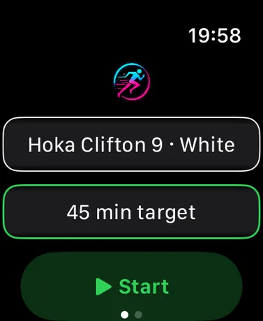
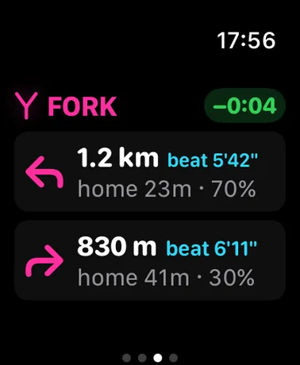
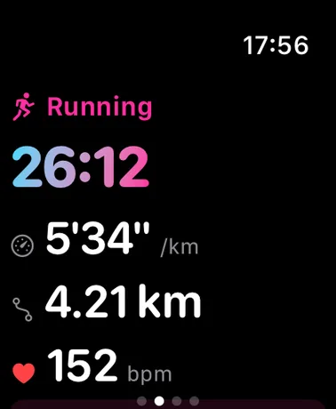
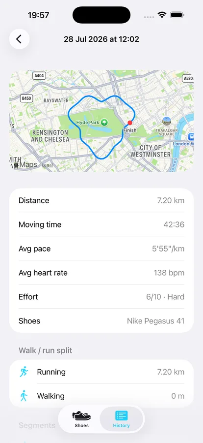
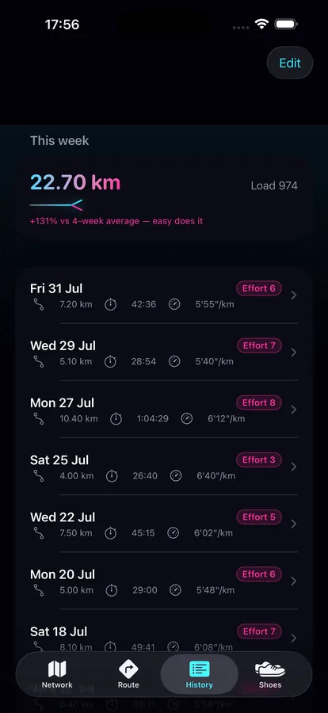
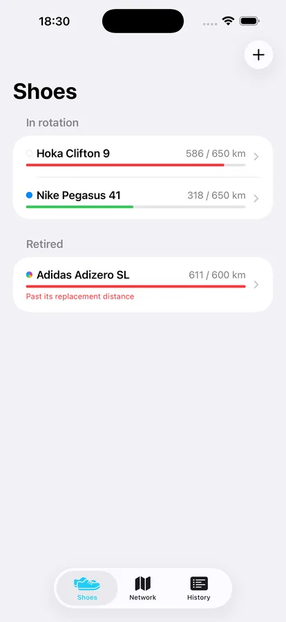

KM 1Just move
No mode picking, no fiddling mid-run. Start it and go — Gaitway sorts the rest out from how you actually move.
Auto walk/run detection
Step cadence tells walking from running — it's a gait change, not just a speed change — with your own run pace setting as backup. Mixed outings are saved to Health as separate, correctly-typed workouts: walk 2 km, run 5 km, walk 4 km becomes three workouts, while a token 500 m jog just stays part of the walk.
Auto-pause in 5 seconds
Stop at a crossing and the session pauses itself after five seconds; start moving and it resumes on its own. Manual pauses stay paused until you say otherwise.
Everything on your wrist
Current pace, distance, heart rate and elapsed time live on the watch, with a wrist tap and split every kilometre — each one scored against your own history over the same ground. When you finish, it asks how hard that felt: separate walking and running effort scores when the outing had both, saved straight onto the workouts.
KM 2It learns your routes
Every run teaches it your local map. The longer you use it, the smarter your wrist gets.
Forks, priced
100 m before every junction you've run before, a pop-up prices each way: the segment's length, your fastest pace on it in the last 28 days — the time to beat — and the quickest you could be home going that way, chained from your best legs.
Segments, raced
The stretch between two forks is a segment. While you run it, a live ± against your usual self over that exact ground rides on your wrist with the distance still to go — and finishing shows your time against your last 28 days, with a medal for your best.
Take me home
One tap mid-run and the watch points the fastest known way back — at forks, the exact turn to take with an ETA chained from your best legs; between them, an arrow towards home.
KM 3And the rest of the kit
Trainer wear
Register your shoes, pick a pair on the watch, and every kilometre counts against them — with a nudge at 90% of their life and a warning when they're done.
Maps everywhere
Every workout lands in Apple Fitness with its route drawn, the iPhone app maps every run in your history, and the Network tab draws everywhere you run as a joined-up web of forks and segments.
Training load
Your effort scores earn their keep: weekly load versus your 4-week average, with an easy-does-it warning when you're ramping too fast.
On your watch face
A complication with this week's distance, one tap from starting a run.
Private by design. Gaitway runs no servers and collects nothing. Workouts live in Apple Health, routes and predictions live on your watch, shoes and history live on your phone. Nothing leaves your devices.
KM 4See it running





